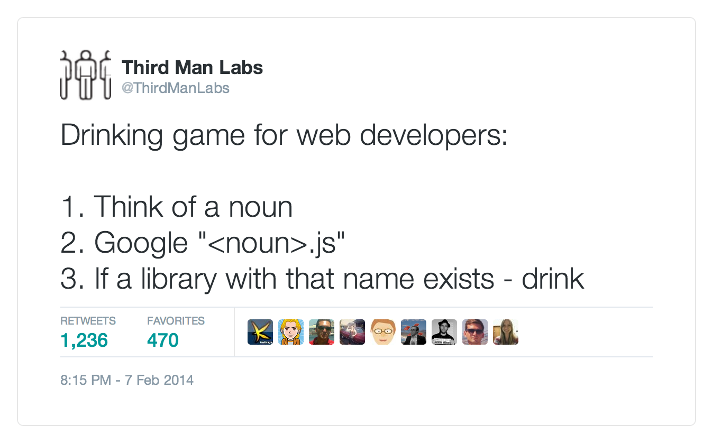
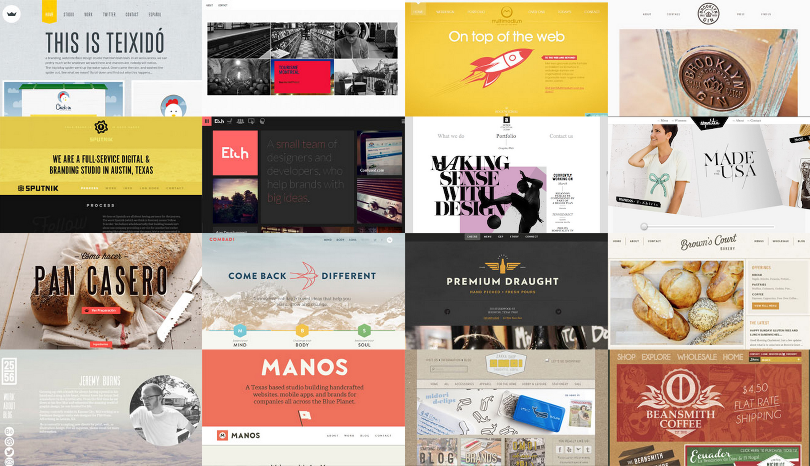
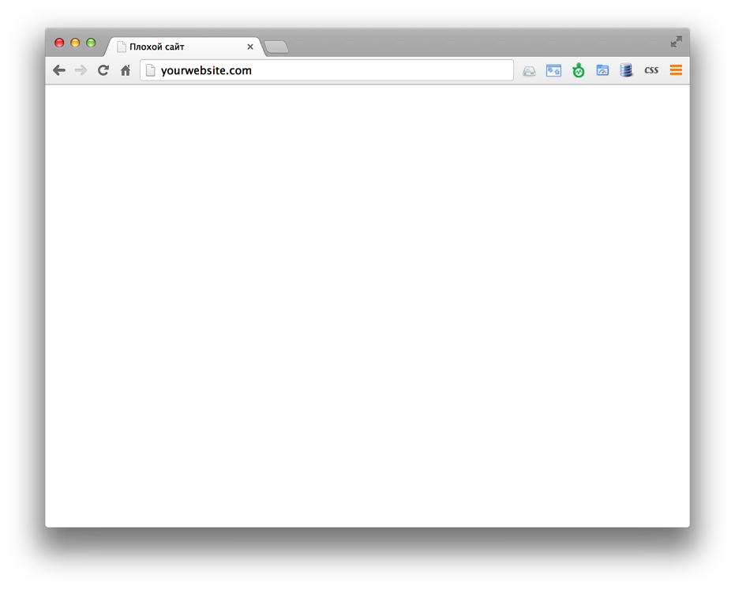
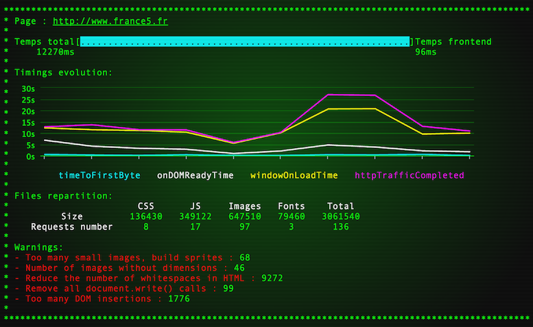
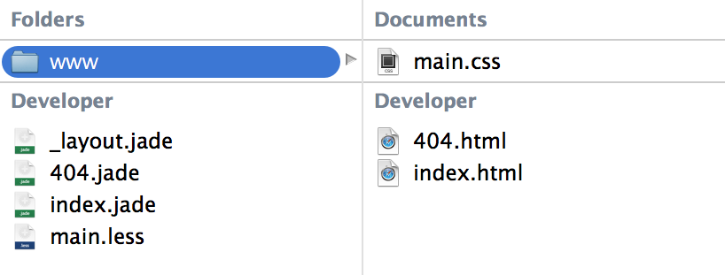

Автоматизация фронтенда — сегодня и завтра
Роберт Харитонов, Одноклассники
Front-end Dev Conf, Минск, 2014 (видео).
Web Standards Days, Рига, Питер 2014 + 8 часовой мастер-класс по автоматизации в Риге и в Киеве.

Роберт Харитонов, Одноклассники
Front-end Dev Conf, Минск, 2014 (видео).
Web Standards Days, Рига, Питер 2014 + 8 часовой мастер-класс по автоматизации в Риге и в Киеве.



И его 2500+ плагинов
И его 2500+ 3000+ плагинов




Слайды презентации — rhr.me/pres/automation